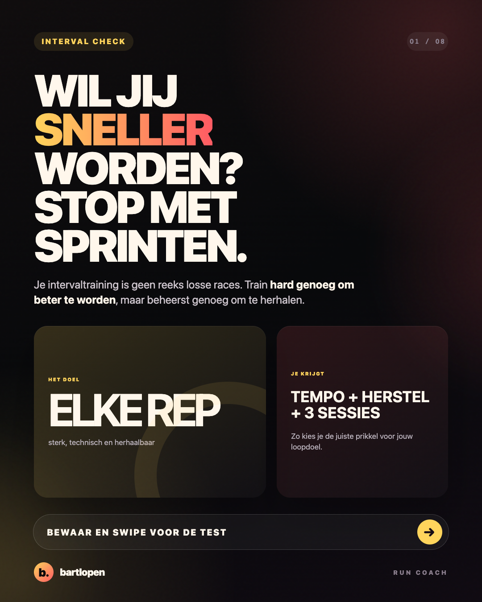
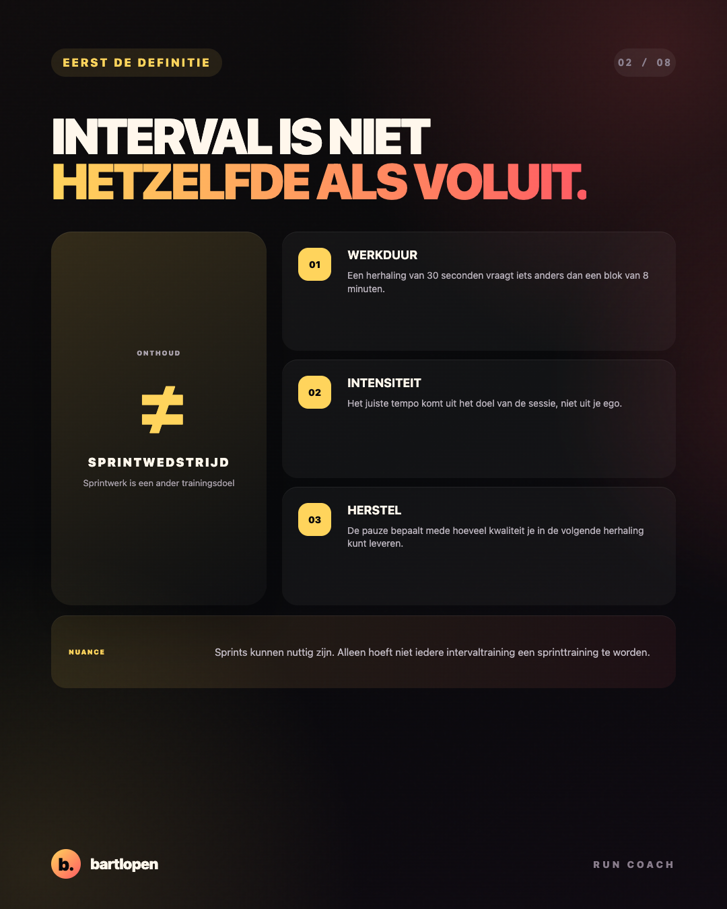
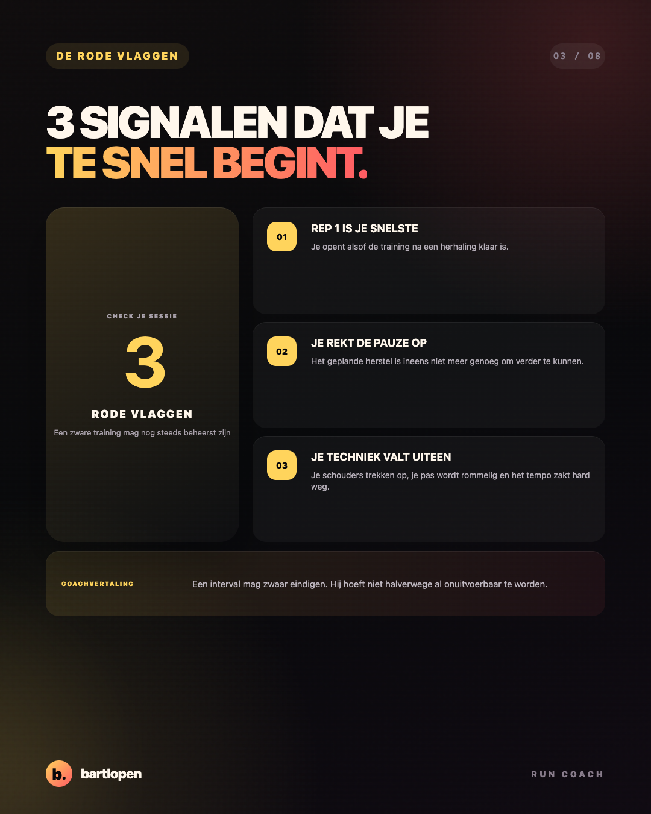
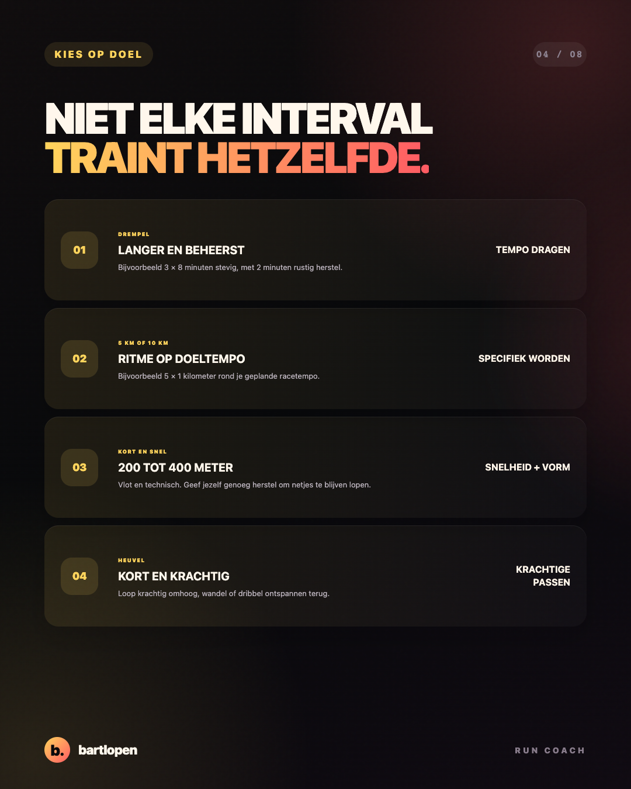
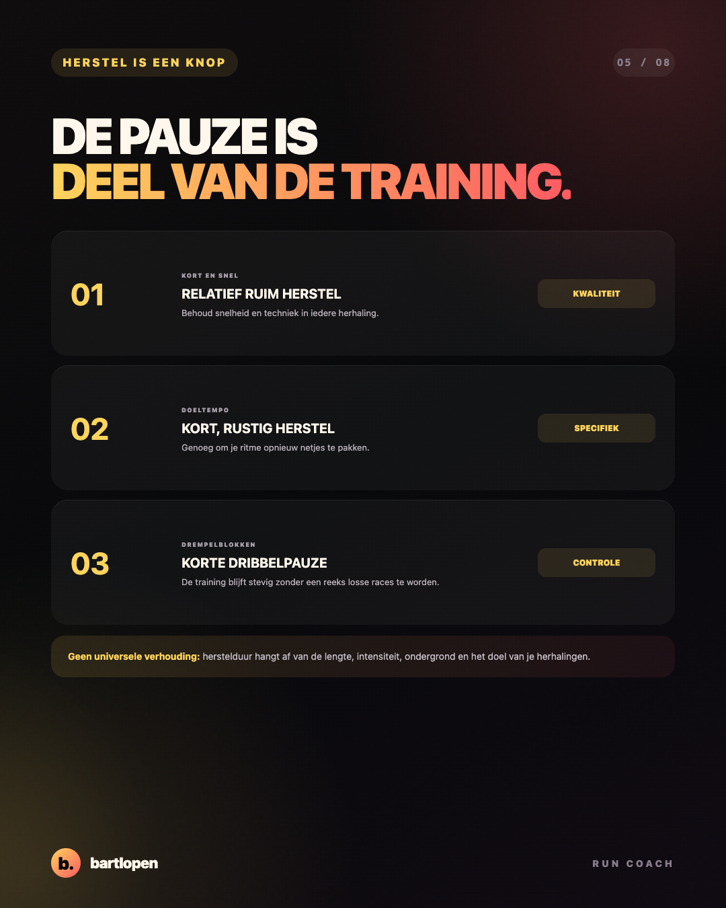
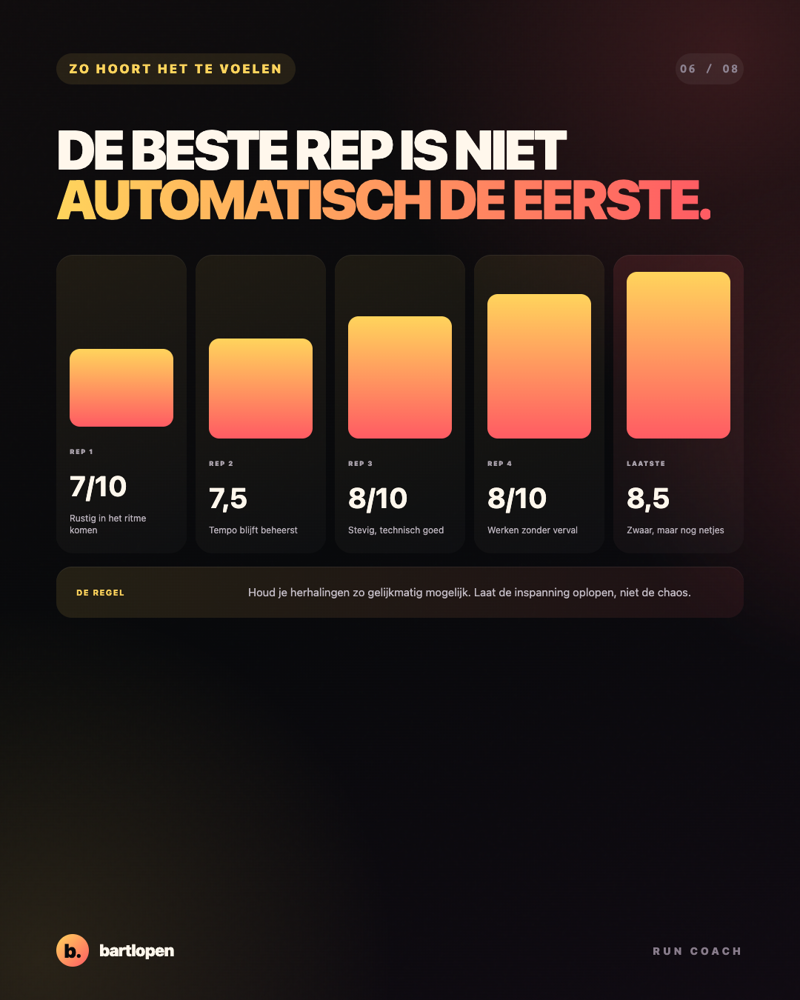
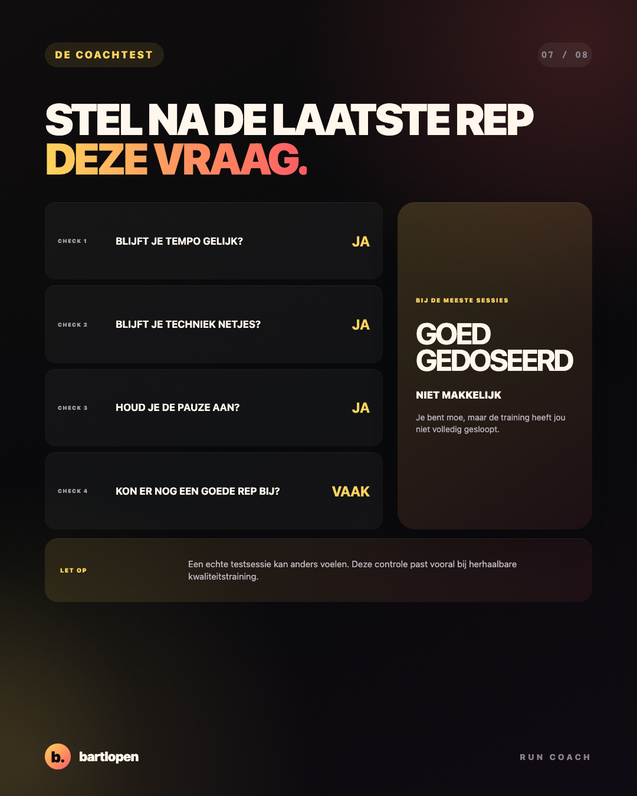
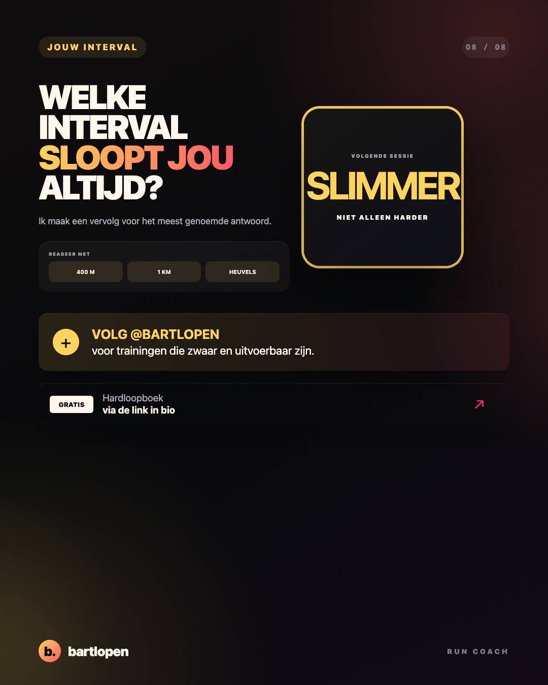

SLIDE 01 ↗Stop met iedere
interval sprinten
Acht slides over het juiste tempo, slim herstel en hoe een goede intervaltraining hoort te eindigen.

SLIDE 02 ↗
SLIDE 03 ↗
SLIDE 04 ↗
SLIDE 05 ↗
SLIDE 06 ↗
SLIDE 07 ↗
SLIDE 08 ↗Caption
WIL JIJ SNELLER WORDEN? STOP DAN MET IEDERE INTERVAL SPRINTEN. 👀 Een intervaltraining is geen reeks losse wedstrijden. Voor de meeste 5 km- en 10 km-sessies wil je hard genoeg lopen voor een goede prikkel, maar beheerst genoeg om iedere herhaling technisch sterk uit te voeren. Drie signalen dat je te snel begint: ❌ je eerste herhaling is veruit de snelste ❌ je moet de geplande pauzes steeds langer maken ❌ je tempo en techniek storten halverwege in Kies je tempo en herstel op basis van het doel: 🔥 drempel: langer en beheerst 🎯 racetempo: gelijkmatig en specifiek ⚡ kort en snel: vlot, technisch en met genoeg herstel De beste intervaltraining is niet de training waarop je de eerste herhaling wint. Het is de training waarop je de laatste herhaling nog goed uitvoert. Welke interval sloopt jou altijd: 400 meter, 1 kilometer of heuvels? 👇 #hardlopen #intervaltraining #5km #10km #hardlooptips #runningtips #bartlopen
Onderbouwing: een systematische review naar intervaltraining, vermoeidheid en looptechniek, een systematische review naar herstelvormen bij intervaltraining en een review naar de trainingsdosis van intervallen bij getrainde lopers. De sessies zijn coachvoorbeelden en geen individueel schema.